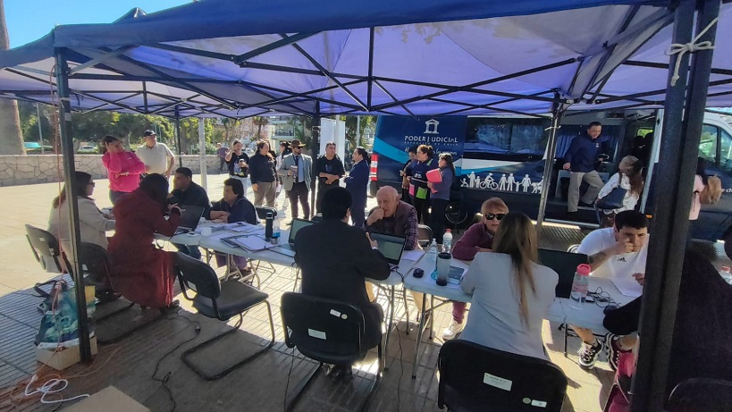

Copiapó, 30 de mayo de 2025 – En una nueva muestra del compromiso del Poder Judicial con la comunidad, el Bus de la Justicia recorrió diversas localidades de la jurisdicción durante la semana del 26 al 30 de mayo, ofreciendo orientación y atención jurídica gratuita a la ciudadanía.
El itinerario contempló las siguientes fechas y lugares:
- 26 de mayo: Frontis de la Municipalidad de Copiapó
- 27 de mayo: Plaza de Vallenar
- 28 de mayo: Frontis de la Municipalidad de Tierra Amarilla
- 29 de mayo: Plaza de Caldera
- 30 de mayo: Consultorio de Paipote
El objetivo principal de esta iniciativa es acercar la justicia a las personas, permitiendo que profesionales especializados en materias de familia, civil, laboral y penal entreguen asesoría directa a los vecinos, resolviendo dudas y orientando sobre los trámites judiciales disponibles.
Durante la jornada también se distribuyeron folletos informativos, con el fin de que la comunidad cuente con material de apoyo claro y accesible sobre los diversos servicios del Poder Judicial.
En esta actividad participaron, por parte del área de informática, los funcionarios Víctor Quevedo, Daniel Caminada y Carlos Carrasco, quienes apoyaron el despliegue tecnológico del operativo. Desde el área de mantenimiento, Camila Acevedo colaboró activamente en las labores logísticas, facilitando el correcto funcionamiento del recorrido en cada localidad.
“El Bus de la Justicia representa una instancia concreta para estar más cerca de las personas y garantizar el acceso a la justicia de manera inclusiva y descentralizada”, señalaron los organizadores del recorrido.
Con esta iniciativa, el Poder Judicial continúa consolidando su rol social, garantizando un acceso efectivo a la información y servicios judiciales a lo largo de la región.
